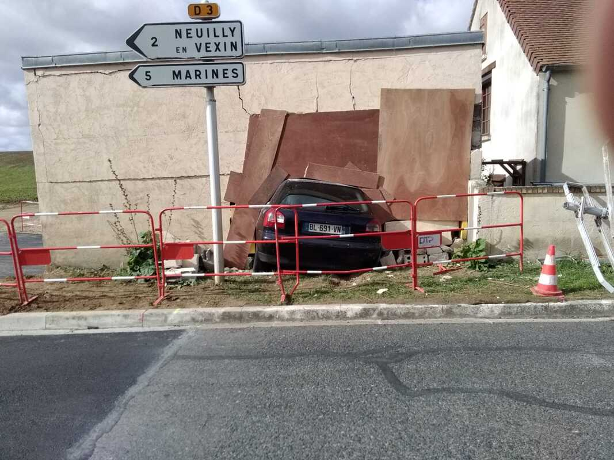
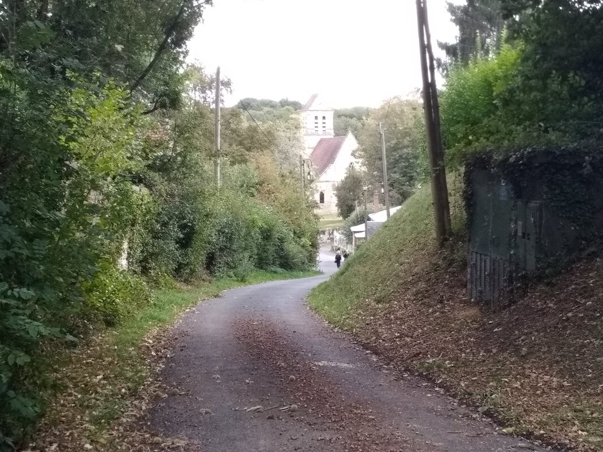
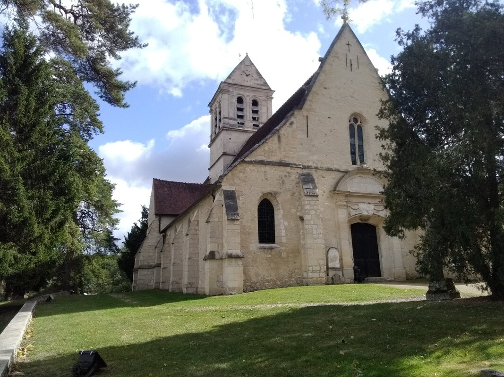

The Bizarre Scene
Hello!
I just stopped at a camping site... So, I got a hot shower! Yay!
The 'Bois Joli' camping (the pretty grove), which is 400 m from the GR 11 (GR in France stands for 'Grande randonnée', meaning long-distance hiking trail) is located in the French Vexin (and not the Norman Vexin, which people have been insisting on, something I didn't know...), not very far from Méru... 😁
Four days of walking, just 20 km today. This is the warm-up period, and my body is adapting. So, sore feet, sore calves, sore thighs, sore shoulders... In a few days, this will pass. And the hot shower really helps. It feels really good, even if the token used doesn't really give me the time to enjoy it for long...
I am ready to head due east from now on, almost to the German border (still far away). I am therefore avoiding Paris to the north.
Did I already say that a hot shower feels good?
Today, I came across a bizarre sight where a car had gone halfway into the wall of someone's house. The homeowner had built a temporary wall around it, and the municipality reconstructed the signpost and the sidewalk, leaving the car still in place! This gives a surreal picture where the car "protrudes" from a wall onto the sidewalk without there being any sign that it was in fact an accident. Surreal, I tell you.
Then I found some nuts, mainly walnuts. I found lots and lots of nuts along the way, which often made up my meals, but here, I must admit, I had never seen such big ones... Really impressive. And good in addition to being very full. A real treat.
Then I came across a beautiful, really beautiful church...
See the photos.
Well, that's all for today...
I wish you well and happiness.
See you soon.








0 Comments